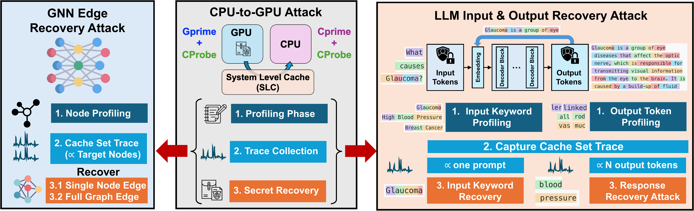
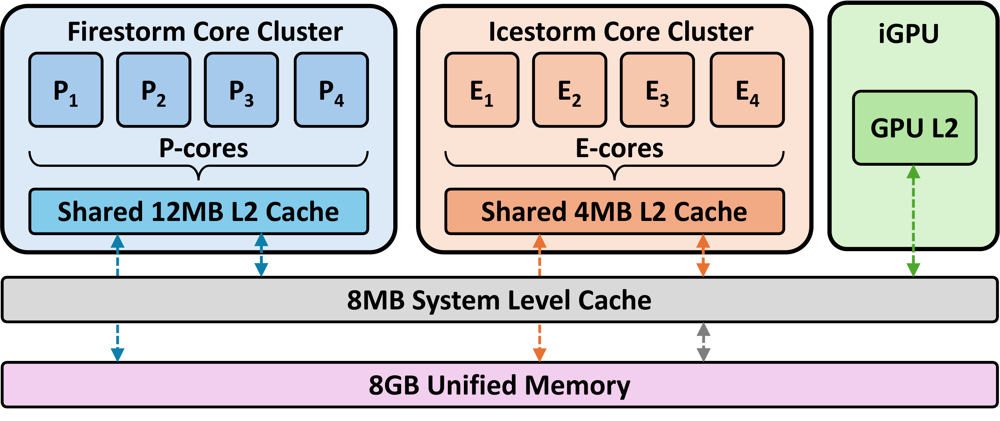
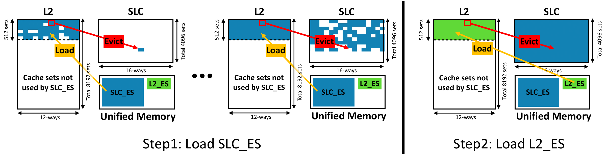
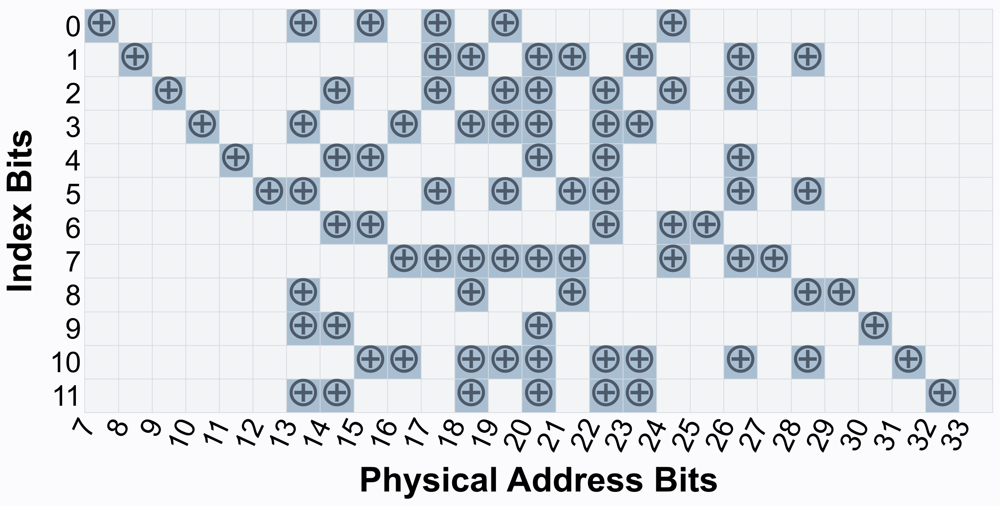
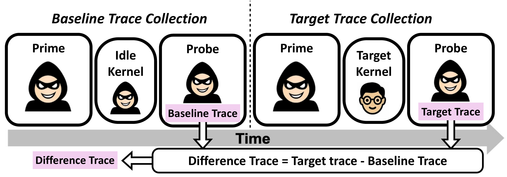
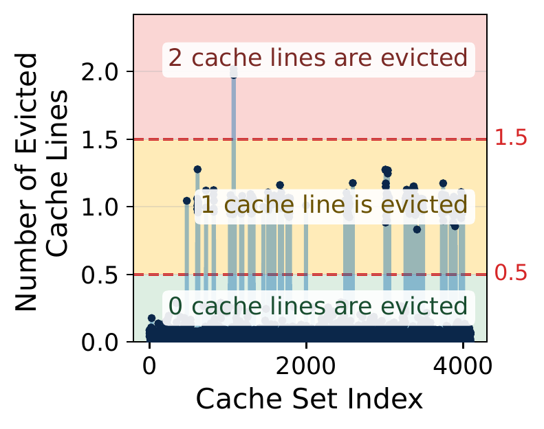
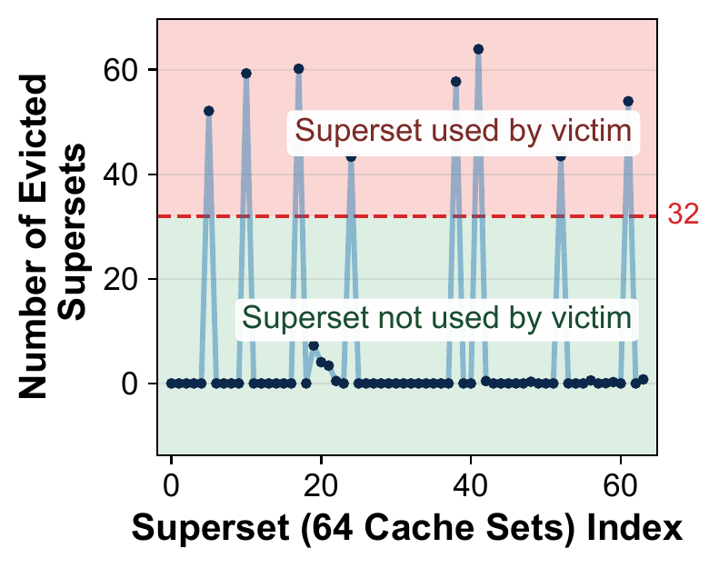

ACM CCS 2026 · Accepted paper
Listen to the
GPU from the
CPU.
SLAC reveals fine-grained GPU memory access through Apple Silicon’s shared system-level cache—without shared memory or victim cooperation.
APPLE M1 / SHARED CACHE MAP LIVE TRACE
ATTACKERCPUprime · probe
VICTIMGPUprivate workload
SYSTEM-LEVEL CACHE12-bit index · 4,096 sets
OBSERVED SET0x6B4EVICTIONS12 / 16
THE COMPLETE ATTACK
From cache activity to private ML data.
The same CPU-to-GPU observation primitive supports two end-to-end attacks. First profile the target items, then collect a cache-set trace around victim inference, and finally infer which private items the victim accessed.

THE ATTACK
Prime the shared cache. Let the GPU leave a footprint. Probe from the CPU.
SLAC first recovers Apple M1’s hidden SLC indexing, then constructs two Prime+Probe variants with different attacker capabilities.

CHOOSE THE PRIMITIVE
Same CPU probe, different priming domain.
CPrime needs only CPU execution. GPrime uses GPU parallelism to fill the SLC faster and more uniformly.
CPU
SLC
GPU
1Fill CPU L2, spill into SLC
2Victim GPU access evicts selected lines
3CPU times reloads and reads the footprint
PRIMING SOURCECPU L2 spill
PROBE SOURCECPU timing
ATTACKER NEEDSCPU execution only
CPrime uses CPU L2 capacity evictions to populate the SLC. It is broader in scope, but its two-stage priming introduces more noise.


THE RESULTS
Separate the victim’s footprint from system noise.
SLAC subtracts a matched idle-kernel baseline, then either averages repeated cache-set traces or aggregates sets into supersets for a single-trial decision.



INTERACTIVE TRACE
Move the paper’s decision threshold.
This compact trace is derived from the first included GPrime sample pair. Each bar aggregates 64 SLC sets into one superset.
OBSERVED ACCESS VALUE64 SUPERSETS
ObservedKnown activeThreshold
Precision100%
Recall100%
Active found8 / 8
The included scripts reproduce both noise-mitigation examples from the paper.
Inspect side-channel scriptsEND-TO-END RECOVERY
Cache footprints reveal graph structure and language data.
GRAPH STRUCTURE LEAKAGE
Recover edges from data-dependent node access.
SLAC profiles each node’s cache footprint, observes a target inference, and matches the trace back to candidate neighbors. Bidirectional confirmation then reconstructs the graph.
Explore the GNN artifactValues shown here come from the GPrime recovery results included in the public artifact.
THE ARTIFACT
Follow the evidence from hardware to secret recovery.
The repository separates Apple Silicon collection, trace validation, and compact recovery scripts. Included traces let reviewers reproduce the main analysis without recollecting hardware data.
01Physical addressesmacOS kernel extension→
02Prime + probeC++ and Metal library→
03Cache tracesvalidation and denoising→
04AGNN recoveryedges and metrics
04BLLM recoverykeywords and tokens
PLATFORM
Apple Silicon macOS
Side-channel collection uses Apple Metal and a physical-address kernel extension. The public artifact includes a prebuilt arm64 wheel and source.
REPRODUCTION
Included sample traces
GNN matrices, cache traces, LLM keyword traces, output traces, and recovery results are included for small reproduction runs.
START HERE
README-driven setup
Build the kernel extension, compile the Python side-channel library, then run the focused validation or recovery scripts.
THE PAPER
SLAC: Access-Driven CPU-to-GPU Side-channel Attacks via System-Level Cache on Apple Silicon
ACM SIGSAC Conference on Computer and Communications Security, 2026
Northeastern University · Louisiana State University
Reverse engineering
Recover a functionally equivalent set of 12 Apple M1 SLC indexing functions.
Side-channel primitives
Build CPrime+CProbe and the GPU-assisted GPrime+CProbe variant.
Privacy attacks
Demonstrate GNN edge recovery and LLM input/output recovery.